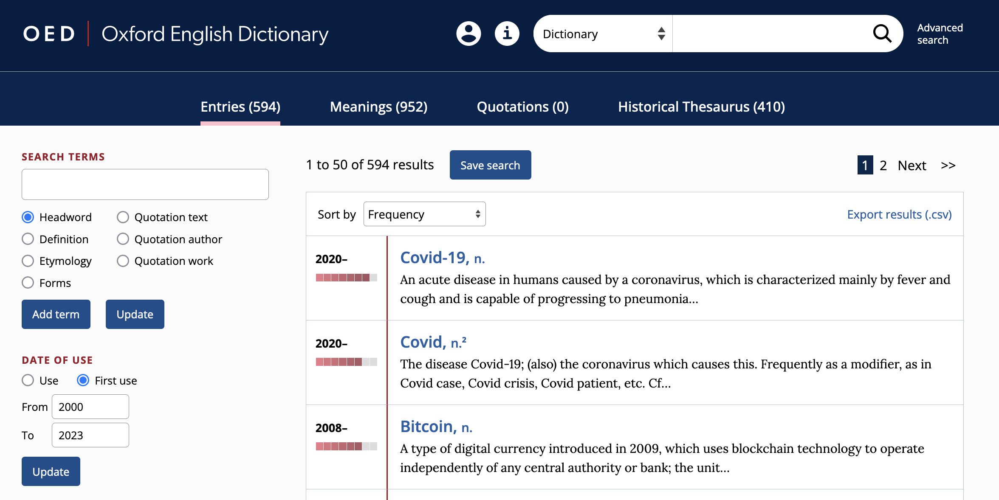

5 Dictionaries
Methods in linguistics
Term paper: Research Proposal
In this Methods course you will prepare a concise Research Proposal (≈3–5 pages) outlining an empirical study in linguistics and demonstrating your understanding of research design and methodology. It will serve as the plan for your future term paper or thesis.
Contents of your research proposal
- title of your research project
- a concise, descriptive title that captures your study focus
- abstract: how you expect the project to turn out
- ~150–250 words summarising aims, methods and anticipated outcomes
- research questions and hypotheses
- list one or more clear research questions and any testable hypotheses and why these hypotheses are plausible
- this should be in structured full sentences, not just a list of keywords
- data: describe the data you intend to collect
- specify type (e.g. corpus, questionnaire), source, size and language(s)
- be specific and detailed: e.g. which sample of words/constructions are you studying? which parts of the corpus are you using?
- methods: explain the methods you will employ
- outline analytical techniques (e.g. frequency analysis, collocation analysis), qualitative coding and tools
- provisional table of contents
- propose major sections and subsections (e.g. introduction, literature review, methods)
- working bibliography
- include references in Chicago author-date style
Format
- ≈ 3–5 pages (2500–5000 characters)
- check your Studien-/Prüfungsordnung for exact details
Submission
via email (pdf) by the end of day
Dictionary vs lexicon
“The lexicon is what linguists call the dictionary that is assumed to be in people’s heads, or the linguist’s best approximation to that.
That is, it is fundamentally a psychological entity, and correspondingly, its contents cannot be observed directly, but must be deduced from speakers’ and hearers’ behaviour.
There are two fundamental approaches to the lexicon.
- The first is that, in the slogan, the lexicon is the home of the lawless (Di Sciullo and Williams 1987): that is, the lexicon contains whatever cannot be predicted by general rule.
- The second, wider, approach sees the lexicon as not only containing the lawless, but also containing anything to do with the structure of words, whether it is lawless or not.”
The Lexicon
Two senses of lexicon
“In the following, I will use lexicon in two senses that are not always sharply distinguished:
- for a metalinguistic level, or a subcomponent in a linguistic model (basically compatible with a variety of theories of language); and
- in the sense of vocabulary as seen from a systematic, synchronic point of view.”
(Lipka, 1992, p. 11)
The Mental Lexicon
A Cognitive View
Cognitive-Linguistic Models of the Lexicon

Word Embeddings

Associations in the Lexicon

What are dictionaries? (Bauer 2022)
What is a Word?
- “A word is listed in the dictionary.” (p. 2)
- But:
- circular reasoning: words are listed because they are words
- dictionaries also list smaller units (e.g. prefix like un-)
- “[…] in general we will accept the spelling conventions of English as defining words. This might not be terribly scientific, but it has the advantage of being practical.” (p. 3)
Defining dictionary
- “The term ‘dictionary’ is usually restricted to real-world dictionaries that appear in print and online.
- Dictionaries provide a list of words of whatever language they deal with — in our case, English — and then give a certain amount of information about each of them.
- Dictionaries tend to have two functions, which may, on occasions, conflict with each other:
- to describe the language as it is, (descriptive)
- and to provide an influence for establishing and maintaining the standard form of the language.” (prescriptive)
Proof of the Existence of Words
“First of all, dictionaries provide evidence of the existence of a word. The fact that a word is listed in a dictionary at all is taken to prove that there is such a word. This can be misleading in two ways.
- From time to time, dictionaries list words erroneously, and the word has no existence outside the dictionary. The OED gives a list of such spurious words including banket (‘a term in bricklaying’), David’s staff (’a navigational instrument) and sardel, variously supposed to be a fish (the sardine) or a precious stone.
- Dictionaries far more often fail to list perfectly good words. This is inevitable. No dictionary can list every word of English”
Objective of Lexicology
- “What is most important, however, is that in lexicology the stock of words or lexical items is not simply regarded as a list of isolated elements.
- Lexicologists try to find out generalizations and regularities and especially consider relations between elements.
- Lexicology is therefore concerned with structures, not with a mere agglomeration of words (cf. Jackson 1988: 222).”
Types of Dictionaries
General Purpose Dictionaries
- Provide comprehensive linguistic information about words in a single language
- Spelling, pronunciation, and grammatical classification
- Multiple meanings and contextual usage examples
- Etymology and historical development notes
- Typically monolingual and organised alphabetically for easy reference
- Valuable for morphological research because they:
- Document detailed word origins and development
- Show common usage patterns and variations
- Provide historical context for word formation
Bilingual and Multilingual Dictionaries
- Facilitate translation between two or more languages
- Key features and functions:
- Support language learning and translation work
- Help decode meanings across different languages
- Illustrate cultural and linguistic nuances
- Important for morphological research by:
- Enabling cross-linguistic word formation studies
- Revealing patterns in comparative linguistics
- Showing how concepts transfer between languages
Specialized Dictionaries
- Focus on specific aspects of language or technical fields:
- Etymology and word origins
- Precise pronunciation guides
- Technical and discipline-specific terminology
- Slang and colloquial expressions
- Particularly valuable for:
- Detailed academic research in specific fields
- Understanding technical vocabulary development
- Tracing specialised word formation patterns
Diachronic and Synchronic Dictionaries
- Diachronic dictionaries:
- Track how words change through history
- Document evolution of meanings and forms
- Show historical usage patterns and variations
- Synchronic dictionaries:
- Focus on language at specific points in time
- Present contemporary usage and meanings
- Document current word formation patterns
- Essential tools for:
- Historical linguistic research
- Understanding language evolution
- Tracking word formation changes over time
Learner’s Dictionaries
- Specifically designed for language acquisition:
- Clear, simplified definitions
- Practical, everyday usage examples
- Word frequency information
- Common collocations and phrases
- Additional features often include:
- Grammar notes and usage guidelines
- Cultural context explanations
- Learning exercises and examples
- Useful for research into:
- Common word usage patterns
- Language acquisition processes
- Basic word formation principles
Examples of Dictionaries
Oxford English Dictionary (OED)
- Official website: https://www.oed.com/
- Comprehensive historical dictionary of English by Oxford University Press
- Considered the authoritative source on English language
- Key features:
- Historical approach: traces word development chronologically
- Extensive quotations: over 3 million citations from wide-ranging sources
- Comprehensive coverage: 500,000+ words and phrases across 20 volumes
- Online since 2000; third edition in progress (electronic-only)
- Value for research:
- Traces detailed development of word forms and meanings
- Provides extensive historical context and usage patterns
- Enables in-depth morphological analysis
- Documents linguistic patterns and changes over time
Wiktionary
- Official website: https://www.wiktionary.org/
- Multilingual, web-based collaborative dictionary
- Key features:
- Crowdsourced content with rapid updates
- Comprehensive and flexible entries for new words
- Multiple language support with cross-references
- Detailed etymological information where available
- Research applications:
- Neologism and language evolution studies
- Cross-linguistic research opportunities
- Contemporary usage patterns
- Educational tool for language learning and research
Urban Dictionary
- Official website: https://www.urbandictionary.com/
- Crowdsourced dictionary focusing on slang and colloquial language
- Key features:
- User-generated content reflecting varied interpretations
- Dynamic tracking of language evolution
- Rich cultural context and references
- Multiple definitions showing usage variations
- Research value:
- Sociolinguistic studies of contemporary language
- Tracking emergence and spread of new slang
- Cultural analysis through language use
- Understanding informal word formation processes
Other Major Dictionaries
Merriam-Webster Dictionary
- Website: https://www.merriam-webster.com/
- American English focus
- Strong etymology coverage
- Regular updates for contemporary usage
- Valuable for understanding American English word formation
Collins English Dictionary
- Website: https://www.collinsdictionary.com/
- Comprehensive vocabulary coverage
- Strong British English focus
- Detailed word formation information
- Includes frequency information and usage trends
Cambridge English Dictionary
- Website: https://dictionary.cambridge.org/
- Clear definitions and examples
- Strong learner focus
- British English emphasis
- Excellent grammatical information and usage notes
Online Etymology Dictionary
- Website: https://www.etymonline.com/
- Detailed word history tracking
- Etymology focus
- Historical development emphasis
- Traces morphological changes over time
Practice: Investigating Lexical Innovation Since 2000 Using the OED
Use the Advanced Search to Find All Lexemes Whose First Use is After 2000

→ export the results to a csv file.
Analyse the exported file in Microsoft Excel
Questions
- Which word-formation processes are most frequent?
- Which word classes are most frequent?
- Which subject areas are most frequent?
Steps
- Save the file in Excel’s format with the
xlsxextension. - Create a
Tablecontaining the data.- Select the region containing the data.
- Click on
Insert Table.
- Create a
Pivot Tableto analyse the data. - Model file: https://1drv.ms/x/s!AvkgNVl9yS6aoX4YgazKPYZGog54